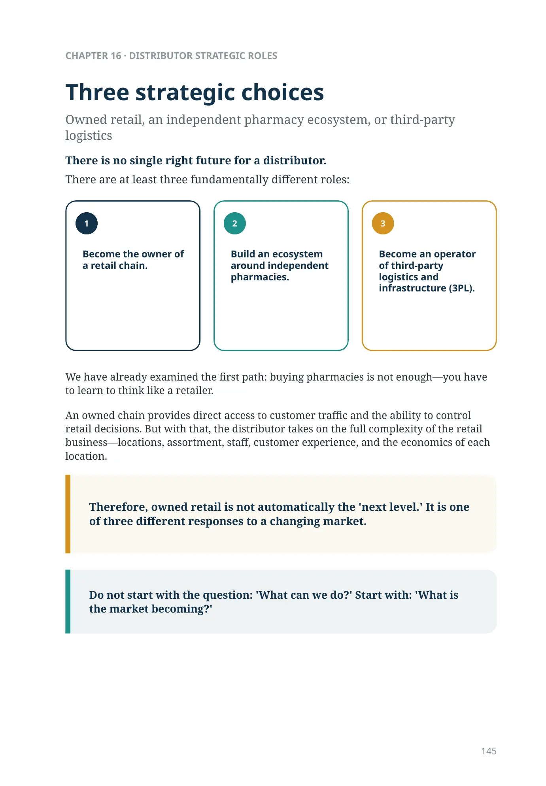
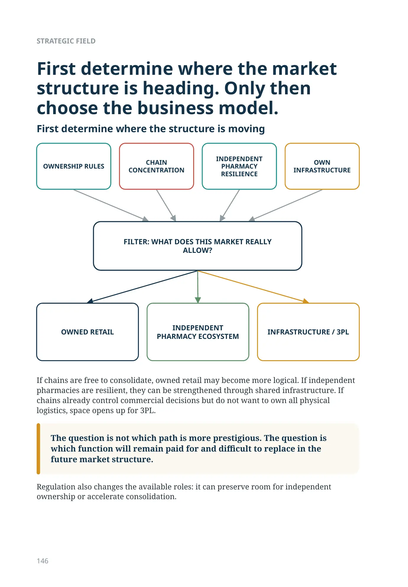
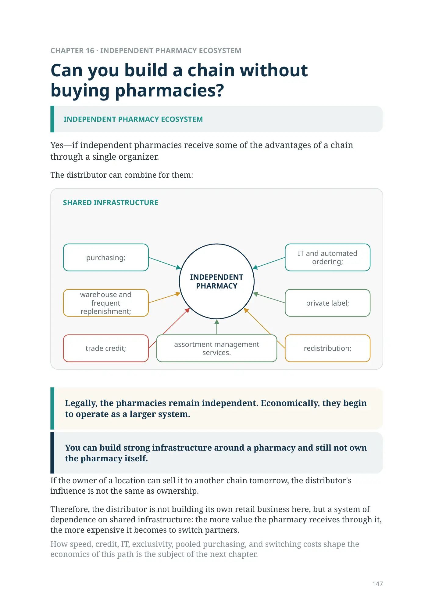
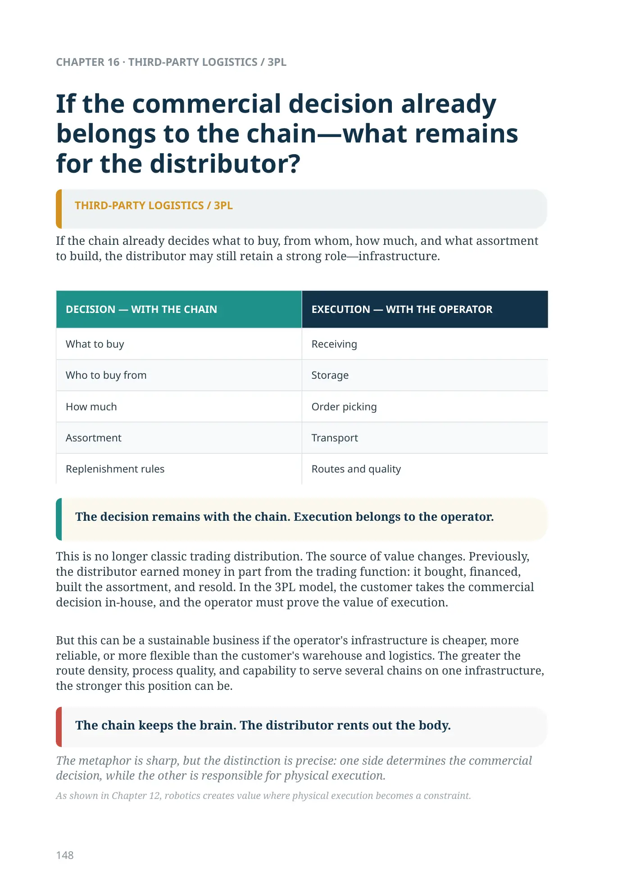
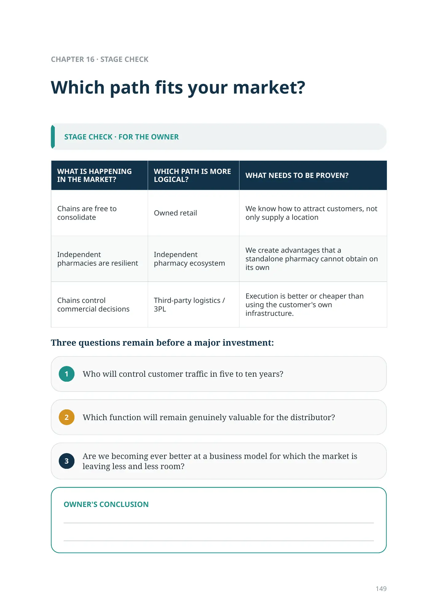
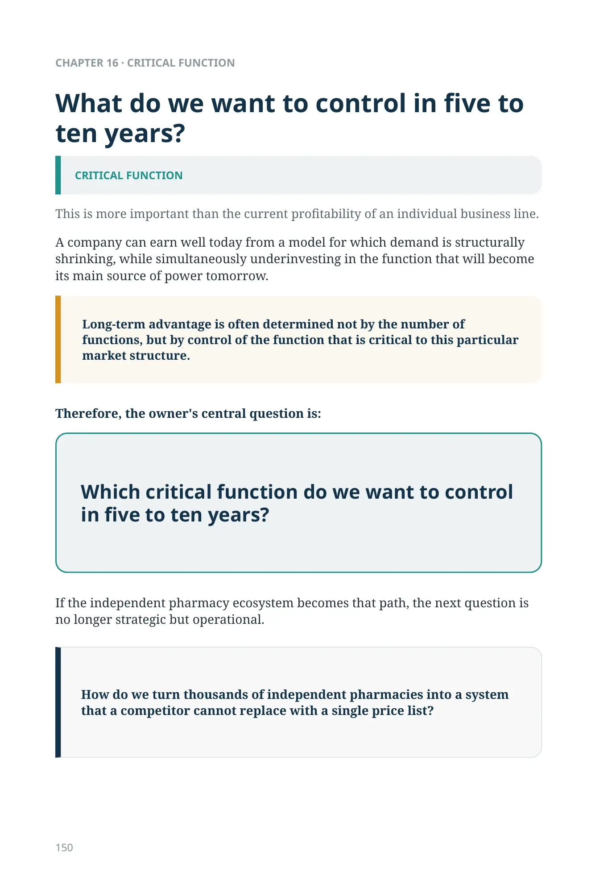
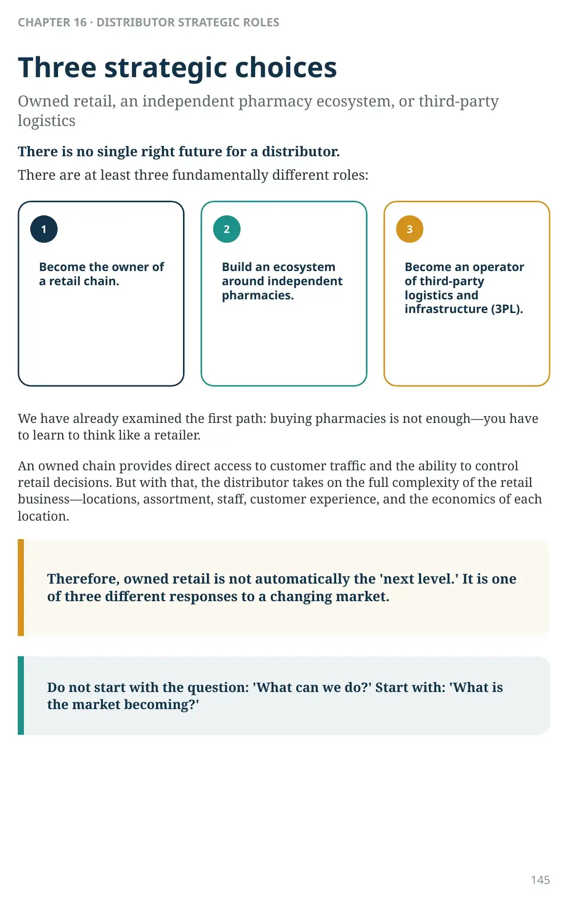

Three strategic choices
As shown in Chapter 12, robotics creates value where physical execution becomes a constraint.

Owned retail, an independent pharmacy ecosystem, or third-party logistics
There is no single right future for a distributor.
There are at least three fundamentally different roles:
- Become the owner of a retail chain.
- Build an ecosystem around independent pharmacies.
- Become an operator of third-party logistics and infrastructure (3PL).
We have already examined the first path: buying pharmacies is not enough—you have to learn to think like a retailer.
An owned chain provides direct access to customer traffic and the ability to control retail decisions. But with that, the distributor takes on the full complexity of the retail business—locations, assortment, staff, customer experience, and the economics of each location.
Therefore, owned retail is not automatically the 'next level.' It is one of three different responses to a changing market.
Do not start with the question: 'What can we do?' Start with: 'What is the market becoming?'
If chains are free to consolidate, owned retail may become more logical. If independent pharmacies are resilient, they can be strengthened through shared infrastructure. If chains already control commercial decisions but do not want to own all physical logistics, space opens up for 3PL.
The question is not which path is more prestigious. The question is which function will remain paid for and difficult to replace in the future market structure.
Regulation also changes the available roles: it can preserve room for independent ownership or accelerate consolidation.
CHAPTER 16 · DISTRIBUTOR STRATEGIC ROLESThree strategic choices123First determine where the market structure is heading. Only then choose the business model.
First determine where the structure is moving
FILTER: WHAT DOES THIS MARKET REALLY ALLOW?
If chains are free to consolidate, owned retail may become more logical. If independent pharmacies are resilient, they can be strengthened through shared infrastructure. If chains already control commercial decisions but do not want to own all physical logistics, space opens up for 3PL.
The question is not which path is more prestigious. The question is which function will remain paid for and difficult to replace in the future market structure.
Regulation also changes the available roles: it can preserve room for independent ownership or accelerate consolidation.
Can you build a chain without buying pharmacies?
Yes—if independent pharmacies receive some of the advantages of a chain through a single organizer.
The distributor can combine for them:
- purchasing;
- warehouse and frequent replenishment;
- trade credit;
- IT and automated ordering;
- private label;
- redistribution;
- assortment management services.
Legally, the pharmacies remain independent. Economically, they begin to operate as a larger system.
You can build strong infrastructure around a pharmacy and still not own the pharmacy itself.
If the owner of a location can sell it to another chain tomorrow, the distributor's influence is not the same as ownership.
Therefore, the distributor is not building its own retail business here, but a system of dependence on shared infrastructure: the more value the pharmacy receives through it, the more expensive it becomes to switch partners.
How speed, credit, IT, exclusivity, pooled purchasing, and switching costs shape the economics of this path is the subject of the next chapter.
If the commercial decision already belongs to the chain—what remains for the distributor?
If the chain already decides what to buy, from whom, how much, and what assortment to build, the distributor may still retain a strong role—infrastructure.
The decision remains with the chain. Execution belongs to the operator.
This is no longer classic trading distribution. The source of value changes. Previously, the distributor earned money in part from the trading function: it bought, financed, built the assortment, and resold. In the 3PL model, the customer takes the commercial decision in-house, and the operator must prove the value of execution.
But this can be a sustainable business if the operator's infrastructure is cheaper, more reliable, or more flexible than the customer's warehouse and logistics. The greater the route density, process quality, and capability to serve several chains on one infrastructure, the stronger this position can be.
The chain keeps the brain. The distributor rents out the body.
The metaphor is sharp, but the distinction is precise: one side determines the commercial decision, while the other is responsible for physical execution.
The decision remains with the chain; execution is with the operator
- What to buy
- Who to buy from
- How much
- Assortment
- Replenishment rules
- Receiving
- Storage
- Order picking
- Transport
- Routes and quality
As shown in Chapter 12, robotics creates value where physical execution becomes a constraint.
Which path fits your market?
| WHAT IS HAPPENING IN THE MARKET? | WHICH PATH IS MORE LOGICAL? | WHAT NEEDS TO BE PROVEN? |
|---|---|---|
| Chains are free to consolidate | Owned retail | We know how to attract customers, not only supply a location |
| Independent pharmacies are resilient | Independent pharmacy ecosystem | We create advantages that a standalone pharmacy cannot obtain on its own |
| Chains control commercial decisions | Third-party logistics / 3PL | Execution is better or cheaper than using the customer's own infrastructure. |
Three questions remain before a major investment:
- Who will control customer traffic in five to ten years?
- Which function will remain genuinely valuable for the distributor?
- Are we becoming ever better at a business model for which the market is leaving less and less room?
What do we want to control in five to ten years?
This is more important than the current profitability of an individual business line.
A company can earn well today from a model for which demand is structurally shrinking, while simultaneously underinvesting in the function that will become its main source of power tomorrow.
Long-term advantage is often determined not by the number of functions, but by control of the function that is critical to this particular market structure.
Therefore, the owner's central question is:
Which critical function do we want to control in five to ten years?
If the independent pharmacy ecosystem becomes that path, the next question is no longer strategic but operational.